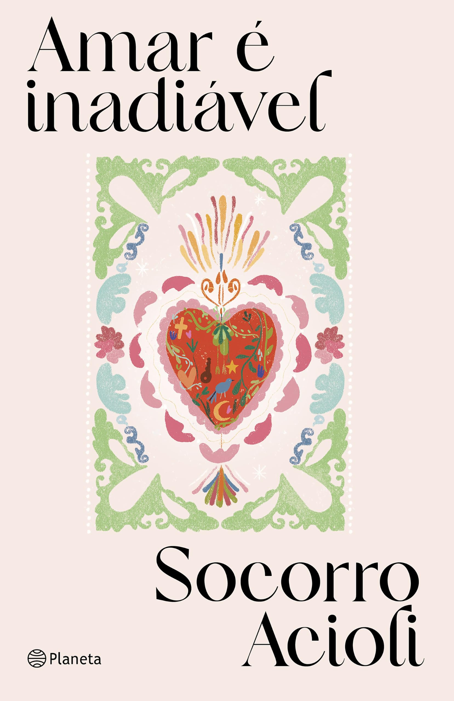

Socorro Acioli
Escritora & Jornalista — Ceará, Brasil
Socorro Acioli é escritora e jornalista cearense, reconhecida por uma narrativa que entrecruza realismo mágico, fé popular e cultura nordestina. Vencedora do Prêmio Jabuti com Ela Tem Olhos de Céu (2013), sua obra destaca-se pela linguagem lírica e pela profundidade com que retrata personagens e territórios do Nordeste brasileiro.

Amar é Inadiável
Reunião de mais de sessenta crônicas de Socorro Acioli sobre a escrita, os encontros e o cotidiano.
Obras de Socorro Acioli
Tabela detalhada
| Obra | Ano | Gênero | Editora | Páginas | Fonte |
|---|
Lançamentos
Amar é Inadiável
Socorro Acioli
- Ano: 2026
- Gênero: Crônicas
- Editora: Planeta
- Páginas: 224
Sobre o livro
Reunião de mais de sessenta crônicas de Socorro Acioli sobre a escrita, os encontros e o cotidiano.
Informações editoriais
Panorama do Catálogo
Soma das páginas das edições físicas catalogadas, agrupadas por tipo de obra.
Trajetória Literária
Principais marcos da vida e obra de Socorro Acioli.